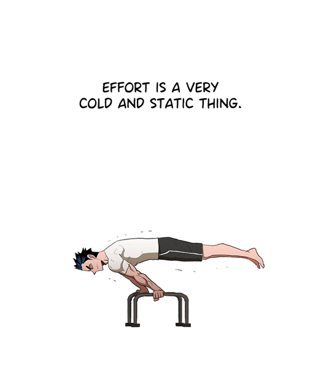

effort
the boxer · entry 1
My favorite all-time piece of fiction is The Boxer. I really do recommend it to everyone, especially if you're prone to bouts of existentialism.
The other day I was actually reading the printed version of the manhwa. I was happy to see The Boxer's success and was also a bit amused about how other, just terrible pieces of fiction managed to make it into print. But, to each their own.
"In media such as novels, cartoons, and movies, effort is always made to look passionate and dynamic so it's more interesting to watch.
But anyone who's ever put in some real effort will know the everyday mind-numbing pain and loneliness true effort demands.
Effort is a very cold and static thing."

These days I feel desperate to find meaning in my career, expand my intellectual capabilities, and desperately grow into a passionate and purposeful human. I have grand dreams about what I could do and who I could be. Even in my own head, I feel like I have flashes of the kind of dynamism I want to see in my work and life.
But the reality is that effort is a long road, made up of small, boring, and cold actions. I've worked hard, but I could've worked harder and I already feel as though it was quite difficult to make it to where I am now. And thus, even if one reaps the results of effort, it's hard to always say if it's a balanced sacrifice.
I think it's good to remind ourselves that true effort shouldn't feel like a dynamic montage. Not only is it boring, but it comes with such a fair share of failures and mistakes.
So, what do we do when faced with the reality that effort is such a draining process? It's easy to become disheartened.
To be honest, I'm still not sure what to do when facing that reality. I don't think there's any job or path in the world that makes effort seem glamorous or easy, unless the end result was easily achievable anyway. Is the possibility of our dreams coming true meant to be the one guiding hope? What about the crush that will come when they might not? In fact, I can't help but terribly fear moments where all our efforts turn out to be utterly futile.
I will leave the answer, for now, to the Boxer.
The next chapter after this line is titled gratitude.
"There are some situations that can never be overcome no matter how hard you try.
When you're faced with a situation like that, when there's nothing you can do no matter how hard you try.
What will you do?...
...I sometimes think that life is a gift. Of course, life's handed me a lot of lemons and I've lost my most precious friends. But the fact that I was born in this world and got to meet you... life has been one great gift.
So maybe, we should just be grateful for the gift of life... so lay your burden down and be freed."
I don't think the line here is to tell us to give up on effort and be complacent. In fact, it's after this line that the motivating character stands up to fight again. Then, after this last instrumental bout of effort he takes, he is mercilessly beaten down by his opponent, into a bloody pulp.
I think the author is encouraging us to be freed of desperation and the loneliness that comes from constantly feeling as though we have something to prove. This life is meant to be lived meaningfully, where every action, even those of mind-numbing effort and even failure, should bring us a sense of agency and freedom, because it will be something we chose to do for ourselves. That's my interpretation, anyway.
"Every life will come to an end. But I believe a lofty beauty indwells in a person who always gives it their all in the marathon that is life, until the day they reach the finish line."